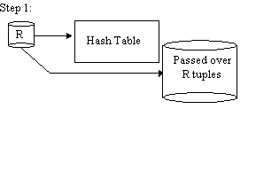
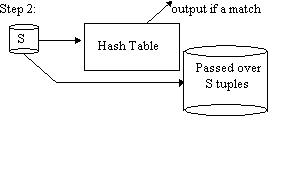
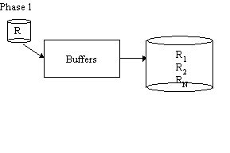
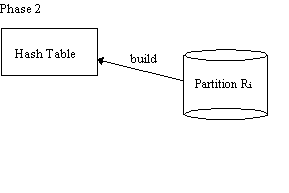
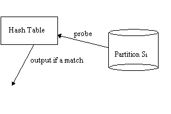
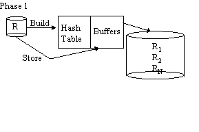
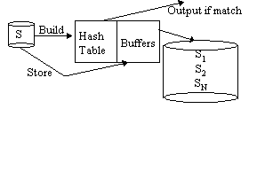

|
Readings in Database Systems, 3rd Edition Stonebraker & Hellerstein, eds. |
|
Query ProcessingA quick primer on the relational algebra
Unary Operations
Binary Operations (i.e. Joins)Join algorithms apply to almost any form of combining multiple collections. Some commonly used join variants (alternative logical algebra operators):
These logical algebra operators can be implemented as minor variations on the same join algorithms! The "Guy Lohman Test" for join operators:
Nested Loops Joinfor each tuple r of R for each tuple s of S if rs satisfies join predicate output rs R is the outer relation (left) S is the inner relation (right)
Refinement 1: Block Nested Loops Joinfor each block BR of R for each tuple s of S for each tuple r of BR such that rs satisfies join predicate output rs Further refinements to nested loops:
Refinement 2: Index Nested Loops Joinfor each tuple r of R probe index over S; output all s s.t. rs satisfies join predicate; Notes:
SELECT cities.name FROM cities, forests WHERE cities.boundary overlaps forests.boundary;
(Sort-)Merge JoinWorks for equijoin, "band" joins we will assume here you know how to do a 2-pass sort [see Knuth or Shapiro] idea: if R & S are sorted on the join column(s), we can "simply" merge them But duplicates complicate things (as usual).
sort R;
sort S;
R.open();
S.open();
r = R.next();
s = S.next();
while (r != NULL && s != NULL) {
while (r.c < s.c)
r = R.next();
if (r.c = s.c) {
while (r.c = s.c) {
output rs;
r = R.next();
}
"rewind" r to first tuple of R where r.c = s.c;
s = S.next();
}
while (r.c > s.c)
s = S.next();
}
Refinement: do merging of R & S while merging runs from each.
Note: Sort-merge is symmetric, so "outer", "inner", "left", "right" are arbitrary Classic Hash JoinWorks for equijoin only Let R be the smaller relation Hash R into VM; for each tuple of S probe hashtable over R and output all rs s.t. s.c = r.c
Simple Hash Join  Repeat steps 1 and 2 with R, S replaced by the passed over tuples. Advantages:
Disadvantages:
Grace Hash Join Phase 1 is repeated with S in place of R  THEN  Advantages:
Disadvantages:
Hybrid HashOriginal paper: DeWitt, Katz, Olken, Shapiro, Stonebraker, Wood, SIGMOD '84.   Phase 2 as in Grace Join Hybrid Hash Advantages:
Disadvantages:
Handling Partition Overflow:
Variation: Virtual Memory
Additional Tricks: Filters Idea: build a filter based on R so you stage less of S to disk
|
|
© 1998, Joseph M. Hellerstein. Last
modified 08/18/98. |